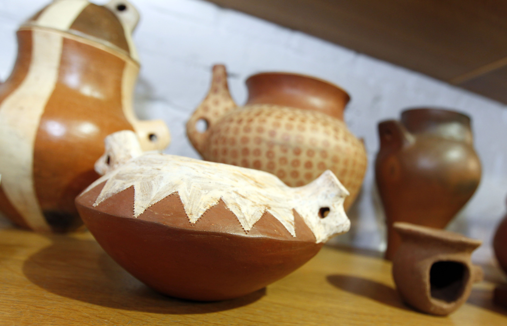

Entre las tradiciones que han permanecido inalterables al paso del tiempo, se encuentran los antiguos oficios
que se siguen ejerciendo hoy en día como antaño. Esta labor artesanal es una tarea ardua y encomiable que tiene
su recompensa con bellas piezas que constituyen auténticas obras de arte de nuestra tradición artesana canaria.
La artesanía canaria presenta modalidades únicas en toda España, como la cestería de plátano, los tejidos de seda,
los cuchillos de mango decorado con incrustaciones de hueso y asta; la cantería y la alfarería hecha sin torno o
la cocida al sol.
La característica más típica de la artesanía canaria es la rusticidad, que a su vez le da un carácter atractivo. De
igual manera, además de los calados y bordados, la cerámica y la cestería, es de destacar la fabricación de tejidos,
como son los vestidos típicos de Canarias, utilizados en especial ocasión para los actos típicos de las islas, las romerías.